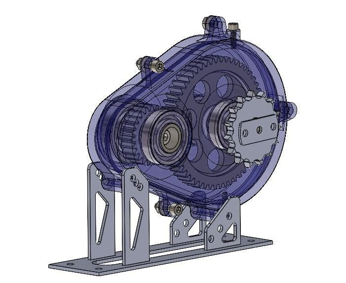
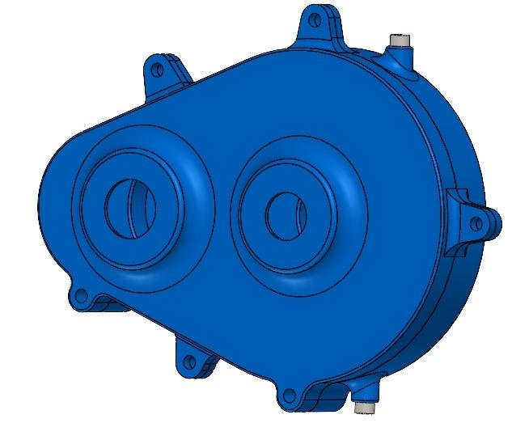
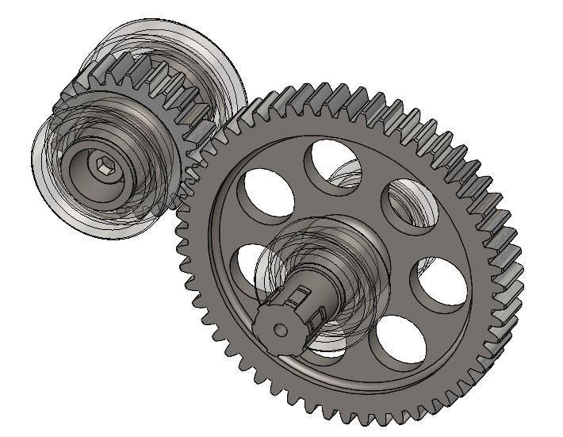
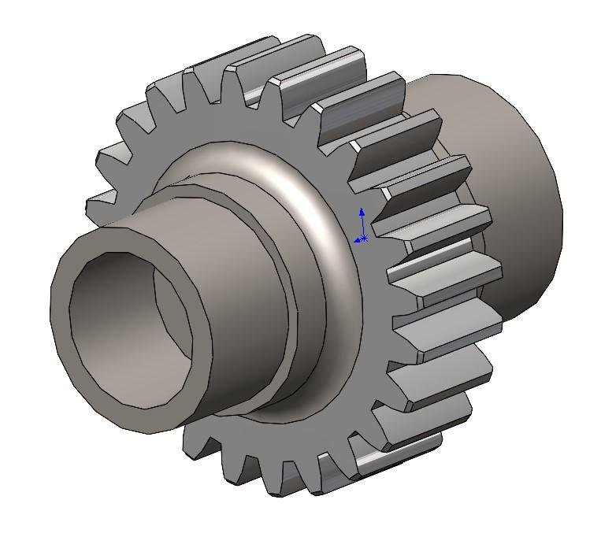
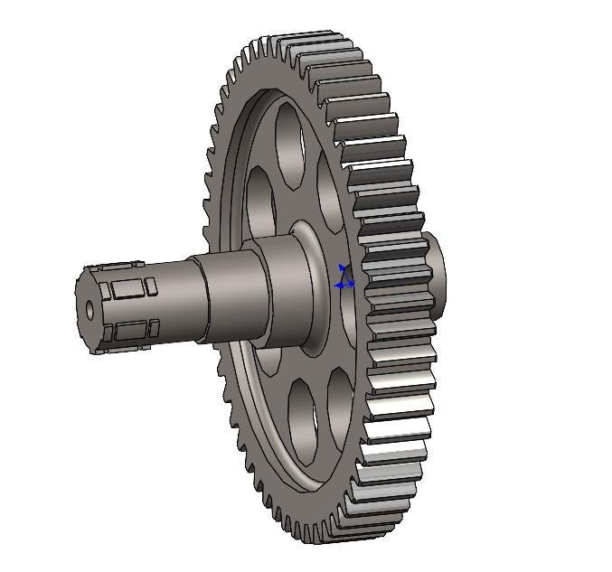

← All projects
Project 03 of 06 Stallion Motorsport Electric
Single stage gearbox
A single stage spur gear reduction that multiplies the motor torque of 68.7 Nm by a ratio of 2.29. I made the gear and shaft as one piece to keep the assembly compact and reliable.
Why spur gears
I chose spur gears for their load capacity, smooth running and simple design.
Gear and shaft as one piece
The gear and the shaft are made as one piece. That gives a compact, reliable assembly that is easy to machine.
Gear data
Module 2. The driving gear has 24 teeth and the driven gear has 55 teeth, which gives the 2.29 reduction ratio. The output shaft has 6 splines and the gear thickness is 15 mm.
Material and manufacture
The material is EN36. The parts are made by milling, gear shaping and hobbing.
Images









